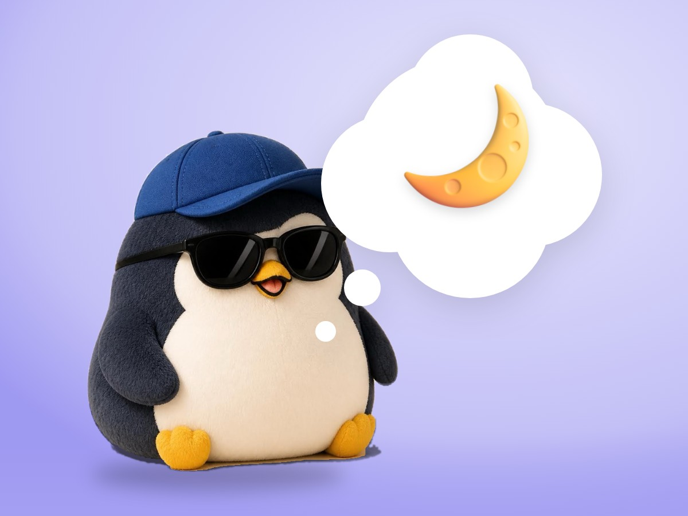

🧪 LAB · 試作 — AIが読書メモから一気に作った記事です。本番の一覧には出していません · 試作の一覧
🐧 EVERYDAY LIFE⚡ 44 SEC
When you feel close to breaking, it is OK to do nothing 🌙

Sound Familiar
Do you ever feel that you cannot laugh, even at a funny moment?
Sometimes you have no energy, even when a friend cheers you on.
That may be a yellow sign from your heart that says "Rest a little."
The Point
When you feel close to breaking, you can choose to "do nothing."
The Reason
Serious people often think "I must try harder," even when things are hard.
But you cannot move well with an empty battery.
⚡ TRY IT
Rest mode for 10 seconds
The penguin is trying too hard. Let's choose rest.
You don't need to tap anything. Let's do nothing together.
Shh… 🌙 There is nothing to do now.
Breathe in…Breathe out…
10sec
🌙 You did nothing for 10 seconds. That is enough.
🍵 You can rest like this anytime.
For Example
For example, on a day off, you can make no plans and just stay in a blanket.
Try This
Today, try to do 1 less thing and go to bed early.
If the hard feeling lasts a long time, you can also talk to a doctor or a counselor.
Keep In Mind
Time for doing nothing is important time to start walking again.
📚 I wrote this from my reading notes.